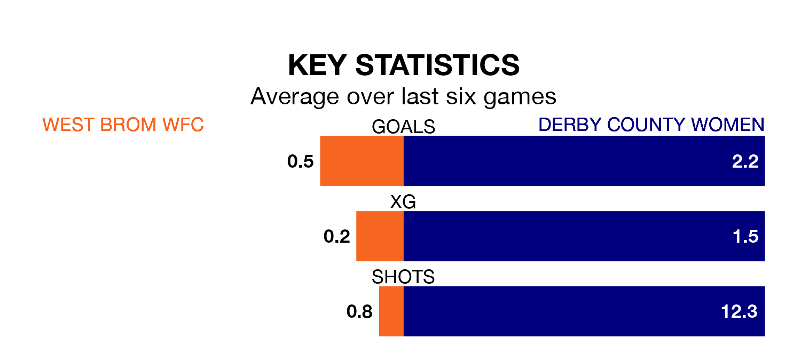

Mid-season relegation candidates West Brom WFC face a challenge against high-flying Derby County Women at the Valley Stadium on Sunday.
West Brom WFC are ninth in the Women's National League Premier Division – North table, and have picked up three wins and three draws in their 12 games to date.
Derby County, meanwhile, are fourth in the standings with 19 points, having won six and drawn one, and are 11 points behind table-toppers Newcastle United W.
With 16 goals in 12 games so far this season, West Brom WFC are scoring at below the league average rate with 1.3 goals per game. And they are conceding more than average, letting in 24 goals at a rate of 2.0 per game.
Derby County, meanwhile, are above average scorers, with 2.2 goals per game, compared to a league average of 1.8. They have conceded 1.1 goals per game.
In the last 10 years, West Brom WFC and Derby County have played each other on six occasions. West Brom WFC won two of them, Derby County three, and they drew once.
On average, West Brom WFC scored 0.8 goals and Derby County 2.0 in those matches.
Their last meeting was on December 17, when West Brom WFC won 1-0 away.
The hosts are in disappointing form in Women's National League Premier Division North, with one win and two draws from their last six games.
With four wins and a draw over that period, the away side's form is much better – they have taken 13 points from 18, compared to West Brom WFC's five.
West Brom WFC's last match was on January 14, a 0-0 draw against Liverpool Feds.
Derby County beat Stourbridge Women 2-0 last time out, on January 21.
Updated: 10:03 (UTC), 30/01/24